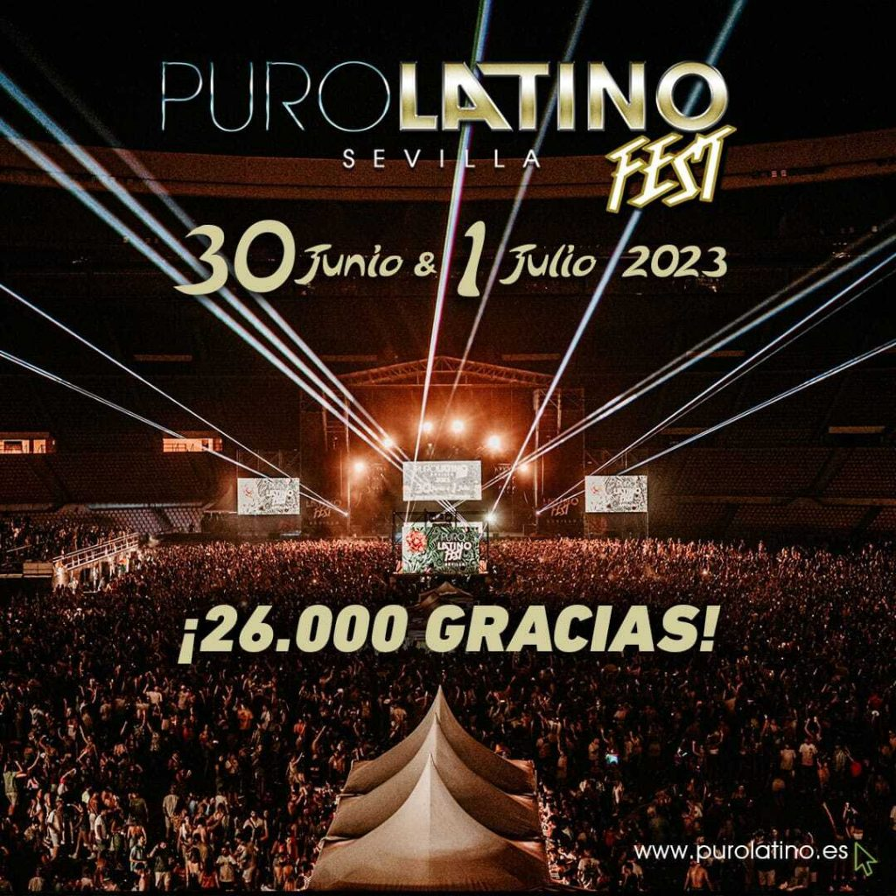
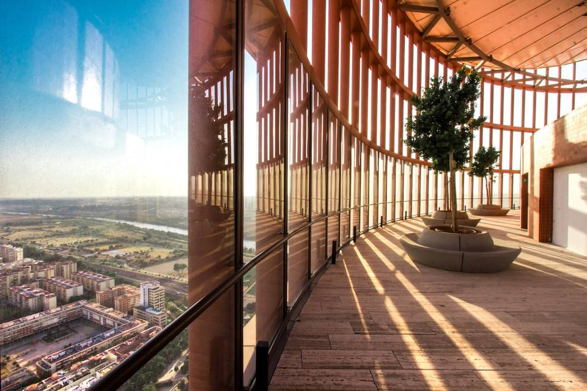
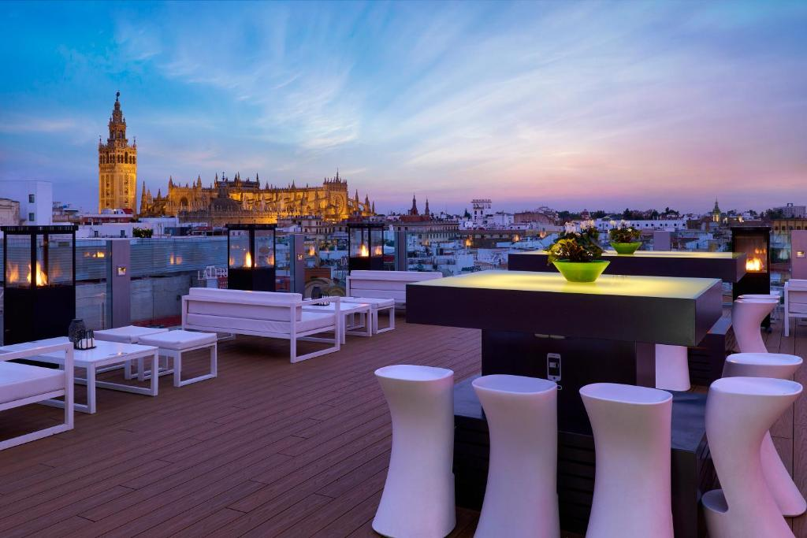
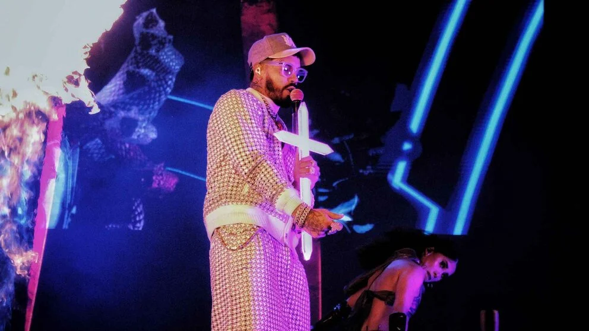
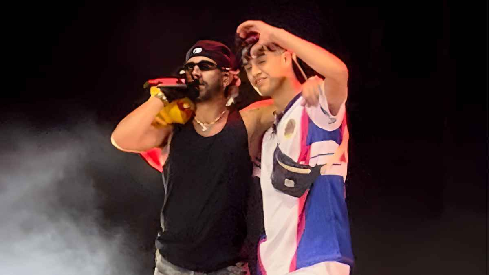
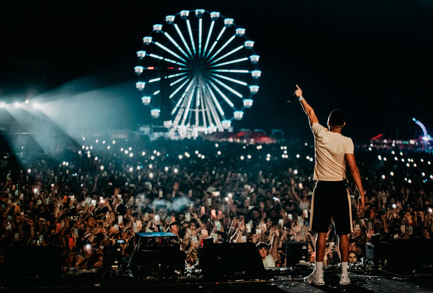
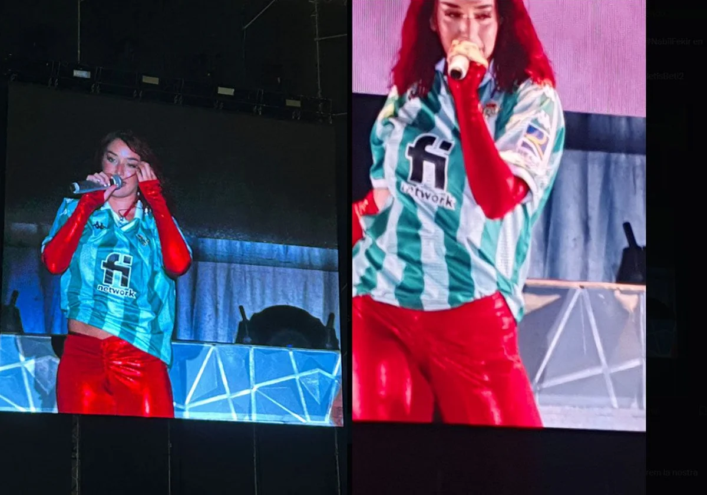
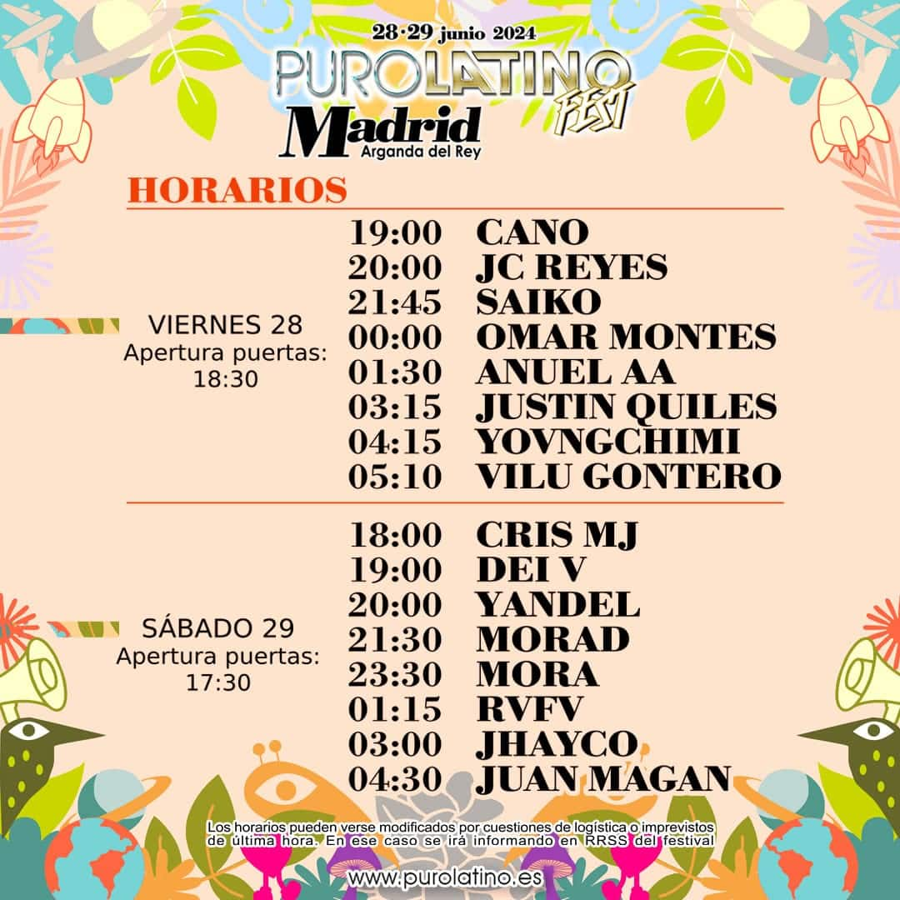
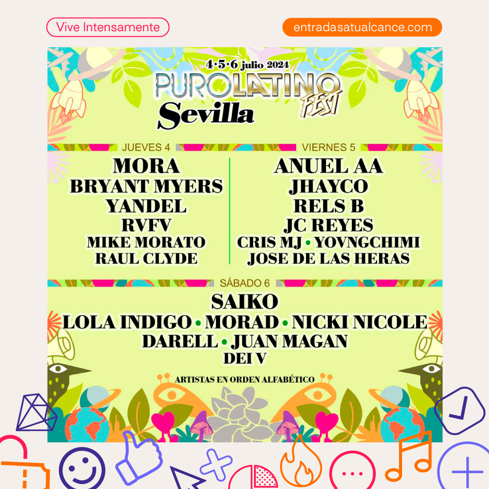
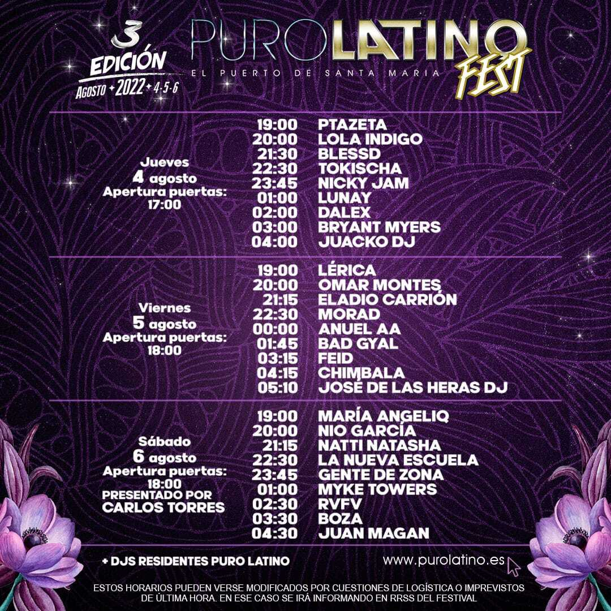

Puro Latino se celebra en varias ubicaciones de España, como Sevilla, El Puerto de Santa María y Torremolinos. Cada recinto se prepara con escenarios vibrantes, diseñados para disfrutar de los mejores artistas de música latina. Vive la experiencia en espacios al aire libre, perfectos para disfrutar del verano y la energía latina.
El público de Puro Latino es apasionado, vibrante y amante de la música urbana. Con una mezcla de generaciones, encontrarás desde jóvenes disfrutando de sus primeras experiencias de festival, hasta adultos que siguen el ritmo del reguetón y trap. Prepárate para bailar, cantar y compartir momentos inolvidables.
El ambiente del festival invita a lucir tu mejor estilo veraniego. Ropa ligera, colores vivos, gafas de sol y mucho brillo son los favoritos de los asistentes. No importa cuál sea tu estilo, ¡el objetivo es sentirte cómodo y preparado para disfrutar todo el día!
Puro Latino es conocido por ser accesible para todos. Las entradas generales suelen rondar entre 40 y 80€, dependiendo de la fecha y la ciudad. También puedes optar por pases VIP, que incluyen acceso preferente y zonas exclusivas, con precios a partir de 150€.
Algunas opciones de alojamiento cercanas:
 Puro Latino reúne a los mayores exponentes de la música urbana y latina. Algunos de los artistas más esperados que han pasado por el festival incluyen:
   Estas son las carteleras de las ediciones anteriores de Puro Latino en distintas ciudades. Consulta los horarios y asegúrate de no perderte a tus artistas favoritos en la próxima edición.
  